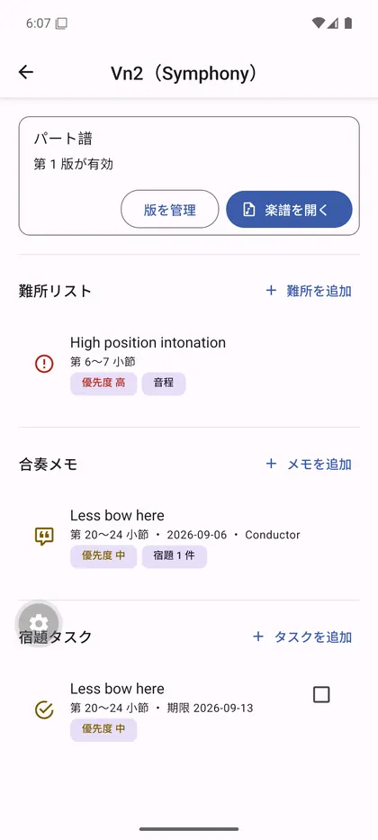

循環形式で書かれた全3楽章を、ほぼ初見の状態から本番の舞台に載せるまでの道筋です。ブライトコプフ新校訂版(Peter Jost, 1999)のパート譜そのものを1ページずつ精読し、印刷された小節番号と練習記号に基づいて構成しています。
弦楽5パート分あります。内容は対になっていて、フォームマップと役割比較は共通、動きの記述と難所だけがパートごとに変わります。
5パート比較で見えてくること — 循環主題の起点はヴィオラ・チェロ・コントラバスの3パートで、両ヴァイオリンは冒頭を休み、ヴィオラのキュー音符を見ています。弱音器の指示位置もパートごとにずれ、コントラバスだけ指示がありません。各ページの「弦楽5パートの役割の違い」の節で対照できます。
教会オルガニストとして生きたフランクが66歳で書いた、最初で最後の交響曲。ひとつの主題が全楽章を貫く循環形式が骨格になっています。
「第1楽章 118小節、弓は中弓で」。合奏の帰り道に 20 秒で書き留めれば、翌日には期限つきの宿題になり、週のはじめには練習メニューとして並びます。

アマチュアオーケストラ奏者のための練習アプリ「小節ノート（仮）」。Android 版を配布中、iPhone 版は準備中です。